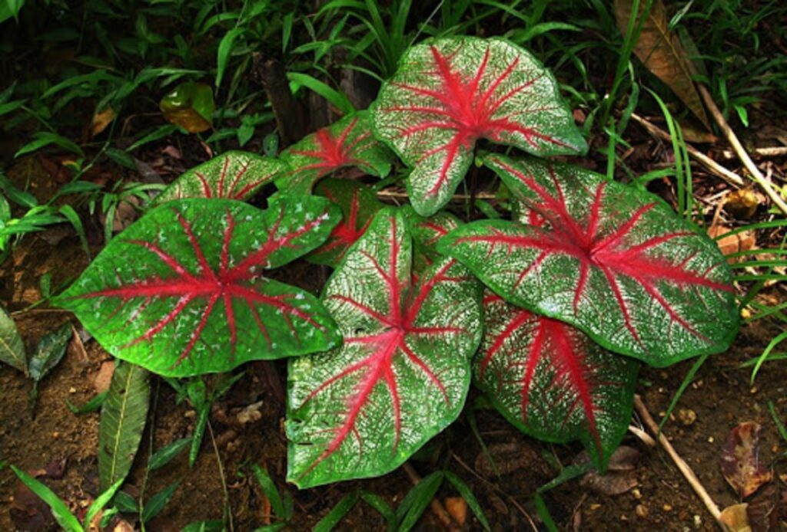

"
"| " |
 |
En las selvas existen una gran diversidad de plantas. De hecho, es uno de los biomas con mayor diversidad biológica del planeta, encontrándose fundamentalmente en zonas de climas tropicales. Según su latitud, podemos distinguir entre selva ecuatorial, tropical, subtropical, templada y subpolar. Además, algunas de las plantas más populares de la selva tropical son las lianas, las orquídeas y las bromelias.
Por supuesto, también podemos encontrar diferentes especies de árboles. El cocotero (cocos nucifera) es una palmera de un único tronco que puede alcanzar los 30 metros de altura. Asimismo, sus hojas miden unos seis metros de largo. Su fruto, el coco, mide entre 20 y 30 centímetros y puede llegar a pesar más de dos kilogramos. Aunque se encuentra sobre todo cerca del mar, también habita en las selvas tropicales.
Igualmente, la planta del café (coffea arabica) es un árbol que crece entre 9 y 12 metros. Sus hojas son de color verde intenso, mientras que las flores son blancas. El fruto del café (conocido como drupa) es de color rojizo. Esta planta es nativa de Etiopia y Yemen, aunque debido a su importancia económica se cultiva en otros países. Si quieres descubrir algunas de las plantas más espectaculares de la selva